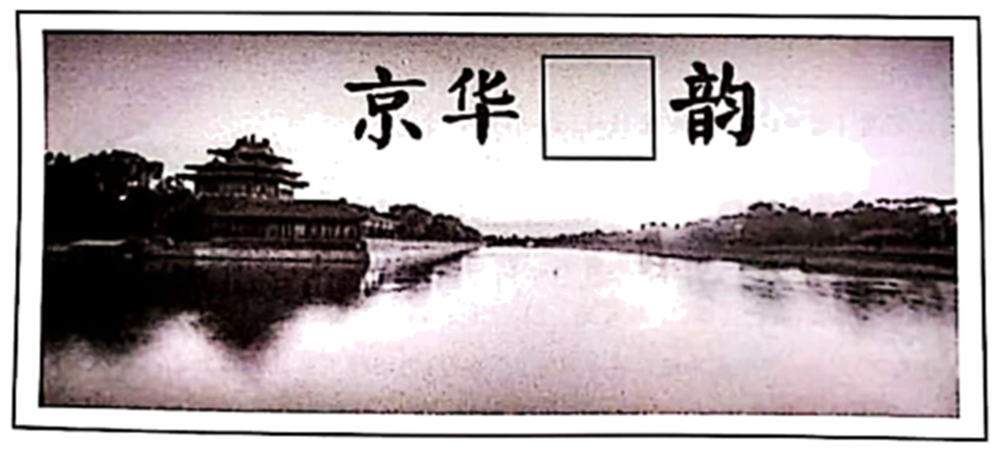

2020年北京市中考语文试题 · 基础选择题 第1、2、3题
2020年“中国水周”的主题是“坚持节水优先，建设幸福河湖”。学校组织同学们参与“中国水周”的宣传，准备举办“京华水韵”展览。请你完成下列任务。
1. 同学们准备从书法作品中搜集单字组成展板标题，对于“水”字的选择产生了争议。请你依据“字体一致，和谐美观”的原则，选择最恰当的一项。（ ）

A. B. C. D.
2. 一位同学负责拟写并讲解前言 请阅读这段文字，完成各题。
请阅读这段文字，完成各题。
“春湖落日水拖蓝，天影楼台上下涵。十里青山行画里，双飞白乌似江南。”明代书画家文徵明曾在诗中生动地描绘了北京的湖光山色【甲】据考证，古都北京既有海淀、南海子等众多水泊湿地，也有无数水井和泉池；既有宽阔繁忙的运河水道，也有难以计数的古桥闸口。你也许会想北京是否有过这般“似江南”的水乡泽国之景【乙】让我们开启一段时光之旅，寻访京城水脉，感受京华水韵。
（1）这位同学对文段中两个加点字的意思和读音，以及【甲】【乙】两处的标点产生了疑问。请你帮他选出判断正确的一项。（ ）
A. “行”在诗中是“流通”的意思，应读xíng。 B. “泊”在此处是“湖”的意思，应读bó。
C. 【甲】处应填入句号，表示陈述语气。 D.【乙】处应填入问号，表示疑问语气。
3. 展览内容分三个单元，同学们为这三个单元分别拟写了标题和引言。阅读文段，完成各题。
第一单元 ① ，碧水润京城
古永定河的冲积与改道，为北京提供了肥沃的土地，留下了大量湖沼和丰富的地下水。战国时期，蓟运河水系就已开通水路运输。元明清三朝，京杭大运河成为连接南北经济、保障京城物资输送的交通大动脉。今天，潮白河水系承担着为北京输送生产生活用水的重任，是首都的生命线。在北京3000多年的建城史、800多年的建都史上，这些水系发挥了重要作用，滋养了古老的幽燕大地。
第二单元 ② ，生态治河湖
北京是一座人口超两千万的特大型城市。为保障城市供水，管理者着力建构多水源保障体系，并努力建设节水型社会。如今，南水北调工程已使上千万人直接受益，北京也连续十七年保持“全国节水型城市”称号。要保障水资源，也要改善水环境。用生态的办法治理生态问题，让许多河湖告别了“亚健康”，水生态系统生物多样性明显提高。北京有信心打好这场碧水保卫战，交出一份出色的答卷。
第三单元 人水相亲，古都添画意
①生态补水后的永定河重新焕发青春，绿头鸭、白天鹅逐水而来，给京城增添了勃勃生机。②经过治理的大运河碧波荡漾，人们可以观赏白鹭在河面翩翩起舞，体会与自然和谐相处的美好。③遁入地下多年的转河“重见天日”，河水清浅，弱柳扶风，像一幅恢宏壮丽的画卷，让人们感到别样的清新。④曾经被填埋地下近半个世纪的玉河，如今穿街走巷，波光粼粼，宛如闹市中的一条玉带，成为人们休憩的好去处。
（1）同学们就第一单元和第二单元标题的拟定展开讨论，你认为下列选填词语最恰当的一项是（ ）
A.①源远流长 ②开源节流 B.①源源不断 ②开源节流
C.①源远流长 ②细水长流 D.①源源不断 ②细水长流
（2）第三单元引言的四个句子都运用了修辞方法，你认为其中修辞方法运用不恰当的一句是（ ）
A.第①句 B.第②句 C.第③句 D.第④句